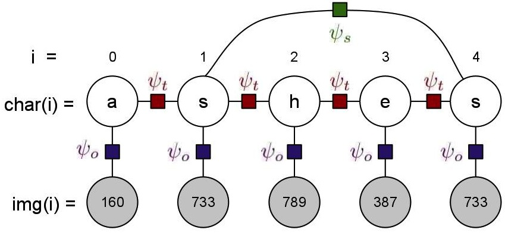

Optical Word Recognition
We will be studying the computer vision task of recognizing words from images. The task of recognizing words is usually decomposed to recognition of individual characters from their respective images (optical character recognition, OCR), and hence inferring the word. However character recognition is often a very difficult task, and since each character is predicted independent of its neighbors, its results can often contain combinations of characters that may not be possible in English. In this homework we will augment a simple OCR model with additional factors that capture some intuitions based on character co-occurences and image similarities.

The undirected graphical model for recognition of a given word is given in the figure above. It consists of two types of variables:
- Image Variables: These are observed images that we need to predict the corresponsing character of, and the number of these image variables for a word is the number of characters in the word. The value of these image variables is an observed image, represented by an integer id (less than 1000). For the description of the model, assume the id of the image at position i is represented by img(i).
- Character Variables: These are unobserved variables that represent the character prediction for each of the images, and there is one of these for each of the image variables. For our dataset, the domain of these variables is restricted to the ten most frequent characters in the English language ({e,t,a,o,i,n,s,h,r,d} [ciation]), instead of the complete alphabet. For the discussion below, assume the predicted character at position i is represented by char(i).
The model for a word w will consist of len(w) observed image ids, and the same number of unobserved character variables. For a given assignment to these character variables, the model score will be specified using three types of factors:
- OCR Factors, : These factors capture the predictions of a character-based OCR system, and hence exist between every image variable and its corresponding character variable. The number of these factors of word w is len(w). The value of factor between an image variable and the character variable at position i is dependent on img(i) and char(i), and is stored in ocr.dat file described in the data section.
- Transition Factors, : Since we also want to represent the co-occurence frequencies of the characters in our model, we add these factors between all consecutive character variables. The number of these factors of word w is len(w)-1. The value of factor between two character variables at positions i and i+1 is dependent on char(i) and char(i+1), and is high if char(i+1) is frequently preceded by char(i) in english words. These values are given to you in trans.dat file described in the data section.
- Skip Factors, : Another intuition that we would like to capture in our model is that similar images in a word always represent the same character. Thus our model score should be higher if it predicts the same characters for similar images. These factors exist between every pair of image variables that have the same id, i.e. this factor exist between all i,j, i!=j such that img(i)==img(j). The value of this factor depends on char(i) and char(j), and is 5.0 if char(i)==char(j), and 1.0 otherwise.
You can download all the data here. The archive contains the following files:
- ocr.dat: Contains the output predictions of a pre-existing OCR system for the set of thousand images. Each row contains three tab separated values "id a prob" and represents the OCR system's probability that image id represents character , . Use these values directly as the value of the factor between image and character variables at position , . Since there are 10 characters and 1000 images, the total number of rows in this file is 10,000.
- trans.dat: Stores the factor potentials for the transition factors. Each row contains three tab-separated values "a b value" that represents the value of factor when the previous character is "a" and the next character is "b", i.e. (char(i)=a, char(i+1)=b) = value. The number of rows in the file is 100 (10*10). data.dat (and truth.dat): Dataset to run your experiments on (see Core Tasks below). The observed dataset (data.dat) consists observed images of one word on each row. The observed images for a word are represented by a sequence of tab-separated integer ids ("id1 id2 id3"). The true word for these observed set of images is stored the respective row in truth.dat, and is simply a string ("eat"). For the core task (3) below, you should iterate through both the files together to ensure you have the true word along with the observed images.
- Extra files (bicounts.dat, allwords.dat, allimagesX.dat): These files are not necessary for the core tasks, but may be useful for further fun and your own exploration. allwords.dat and allimagesX.dat are larger versions of data.dat and truth.dat, i.e. they contain all possible words that can be generated from our restricted set of alphabet, and five samples of their observed image sequences (one in each file). You can run inference on these if you like, but is likely to take 15-20 times longer than the small dataset. bicount.dat is in the same format as trans.dat, but instead of storing inexplicable potentials, it stores the joint probability of the co-occurences of the characters.
Core Task
1. Graphical Model: Implement the graphical model containing the factors above. For any given assignment to the character variables, your model should be able to calculate the model score. Implemention should allow switching between three models:
- OCR model: only contains the OCR factors
- Transition model: contains OCR and Transition factors
- Combined model: containing all three types of factors
Note: To avoid errors arising from numerical issues, we suggest you represent the factors in the log-space and take sums as much as possible, calculating the log of the model score.
2. Exhaustive Inference: Using the graphical model, write code to perform exhaustive inference, i.e. your code should be able to calculate the probability of any assignment of the character and image variables. To calculate the normalization constant Z for the word w, you will need to go through all possible assignments to the character variables (there will be of these).
3. Model Accuracy: Run your model on the data given in the file data.dat. For every word in the dataset, pick the assignment to character variables that has the highest probability according to the model, and treat this as the model prediction for the word. Using the truth given in truth.dat, compare the accuracy of the model predictions using the following three metrics: 1. Character-wise accuracy: Ratio of correctly predicted characters to total number of characters 2. Word-wise accuracy: Ratio of correctly predicted words to total number of words 3. Average Dataset log-likelihood: For each word given in data.dat, calculate the log of the probability of the true word according to the model. Compute the average of this value for the whole dataset.
Compare all of the three models described in (1) using these three metrics. Also give some examples of words that were incorrect by the OCR model but consequently fixed by the Transition model, and examples of words that were incorrect by the OCR, partially corrected by the Transition model, and then completely fixed by the Combined model.